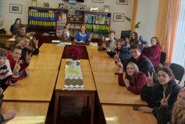
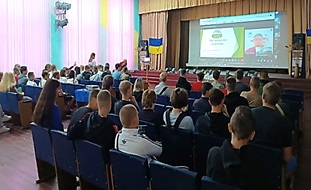
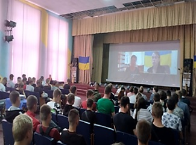
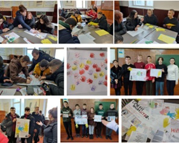
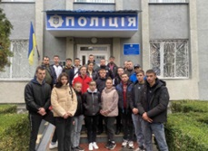
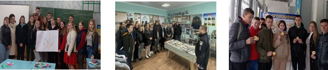
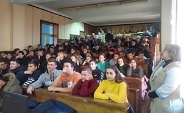

ПРЕВЕНТИВНЕ ВИХОВАННЯ В КОЛЕДЖІ:

ПРІОРИТЕТНИЙ НАПРЯМ ДІЛЬНОСТІ
Превентивна діяльність є самостійним спеціалізованим педагогічним процесом, має свою мету, принципи, зміст, форми і методи та використовує елементи правоохоронної, правової, медико – оздоровчої роботи.
✔НОРМАТИВНО-ПРАВОВА БАЗА ПРЕВЕНТИВНОГО ВИХОВАННЯ
КООРДИНАЦІЙНА РАДА ПРОФІЛАКТИКИ ПРАВОПОРУШЕНЬ
✔Положення про правовиховну роботу
✔Положення про Координаційну Раду профілактики правопорушень
✔План роботи Координаційної Ради профілактики правопорушень на 2023-2024н.р.
✔Наказ Про створення координаційної ради з профілактики правопорушень на 2023-2024н.р.
В ПОЛІ ЗОРУ - ПРЕВЕНТИВНЕ ВИХОВАННЯ
✔МЕТОДИЧНЕ ОБ’ЄДНАННЯ КУРАТОРІВ АКАДЕМІЧНИХ ГРУП 03.12.2022. Завдання та основні приорітети превентивного виховання студентської молоді в умовах викликів сьогодення
✔ПЕДАГОГІЧНА РАДА 23.03.2023. Система превентивного виховання: реалії сьогодення чи виклики часу. Доповідач: голова Ради соціально-гуманітарної та виховної роботи Валентина Шинкаренко
✔ПЕДАГОГІЧНА РАДА 11.06.2024. Про превентивне та правове виховання здобувачів освіти ВСП НФК ЗВО ПДУ Доповідач: голова Ради соціально-гуманітарної та виховної роботи Валентина Шинкаренко
ПРЕВЕНТИВНЕ ВИХОВАННЯ В КОЛЕДЖІ- це цілісна система підготовчих, профілактичних дій педагогічного колективу спрямованих на попередження, подолання відхилень у поведінці здобувачів освіти і запобігання розвитку різних форм їх асоціальної, аморальної поведінки.
Превентивне виховання – це комплексний цілеспрямований вплив на особистість у процесі її активної динамічної взаємодії із соціальними інституціями, спрямованої на фізичний, психічний, духовний, соціальний розвиток особистості, вироблення в неї імунітету до негативних впливів соціального оточення, профілактику і корекцію асоціальних проявів у поведінці студентської молоді, на їх допомогу і захист.
Це цілеспрямована система економічного, правового, психолого-педагогічного, соціально-медичного, освітнього, інформаційно-освітнього та організаційного змісту, спрямованих на формування позитивних соціальних установлень, запобігання вживанню психоактивних речовин, відвернення суїцидів та формування навичок безпечних статевих стосунків.

● правопорушень (схильність до агресії , крадіжок, брехні та інших вад, що можуть призвести до кримінальних дій);
● шкідливих звичок (алкоголізму, наркоманії, тютюнопаління , токсикоманії, то що );
● статевих порушень та їх наслідків (статевої розпусти, венеричних захворювань, ВІЛ, СНІД , проституції , тощо) ;
● егоцентризму та екологічної брутальності (позитивне ставлення до всього, що оточує, свідомість, підвищення культури споживання , загальноприйнятні норми людської моралі, тощо).
В умовах війни в Україні проблема превентивності набуває особливої гостроти, оскільки молодь формується в складних соціокультурних умовах економічних і політичних суперечностей, неврівноваженості соціальних процесів, криміногенності суспільства.   Спостерігається тенденція до загострення соціально-економічних, психолого-педагогічних та медико-біологічних факторів, які детермінують деструктивну поведінку неповнолітніх.Зростає чисельність дітей з порушенням норм поведінки та тих, які відносяться до “групи ризику” і долучаються до раннього алкоголізму, наркоманії, проституції, збільшується питома вага протиправної, агресивної та аутоагресивної поведінки підлітків під впливом алкогольного та наркотичного сп’яніння. Девіантна поведінка молоді торкається усіх сфер соціального функціонування і проявляється у насильстві та агресії, негативному ставленні до оточення, нездатністю прогнозувати результати своєї поведінки, низькими комунікативними навичками.  ПРЕВЕНТИВНЕ ВИХОВАННЯ МОЛОДІ ЗДІЙСНЮЄТЬСЯ НА ТРЬОХ РІВНЯХ:  Робота педагогічного колективу коледжу у напрямі превентивного виховання полягає у:  ПРЕВЕНТИВНЕ ВИХОВАННЯ В ДІЇ
I. Раннє, або первинне, превентивне виховання (соціально-педагогічна профілактика),
ІІ. Вторинне превентивне виховання (превентивна допомога і корекція),
ІІІ. Третинне превентивне виховання (адаптація, реабілітація і ресоціалізація).
● популяризації в студентському середовищі знання про негативний вплив на здоров’я алкоголізму, наркотиків, куріння, формувати в студентів потреби у здоровому способі життя;
● здійсненні просвітницької роботи щодо запобігання правопорушень;
● індивідуальній роботі зі здобувачами освіти, схильними до девіантної поведінки;
● співпраця з соціальними партнерами, причетними до виховання студентської молоді з девіантною поведінкою;
● формуванні в здобувачів освіти високих моральних якостей, які є головним чинником вибору способів поведінки.
✔ГО «НАРКОНОН»: просвітницький лекторій «Вся правда про наркотики»;
✔ДУ НМЦ ВФПО: цикл зустрічей для студентських та педагогічних колективів «Інтернет шахрайство та кібербезпека в інтернеті»;
✔Кам'янець-Подільське районне управління поліції Головного управління національної поліції в Хмельницькій області: «Захист прав людини в умовах війни в Україні»;
✔Просвітницька екскурсія до Сектору Поліцейської діяльності №1 відділення поліції №2 Кам'янець-Подільського районного управління поліції Головного управління Національної поліції в Хмельницькій області
✔Зустріч з поліцейськими офіцерами Новоушицької громади;
✔Новоушицьке бюро правової допомоги: виховна година «Мій світ без насильства»
✔Новоушицьке бюро правової допомоги: Права та обов`язки неповнолітніх
✔Новоушицьке бюро правової допомоги: Як не потрапити в пастку работоргівців
Виконавець:
Валентина ШИНКАРЕНКО, Анастасія ТИТАРЧУК